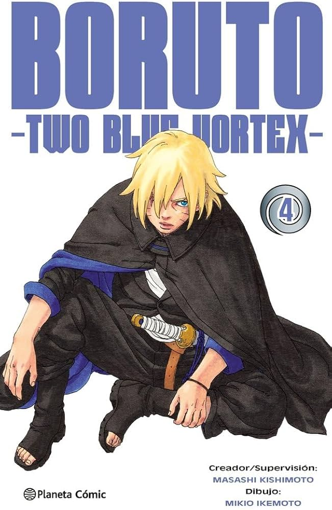
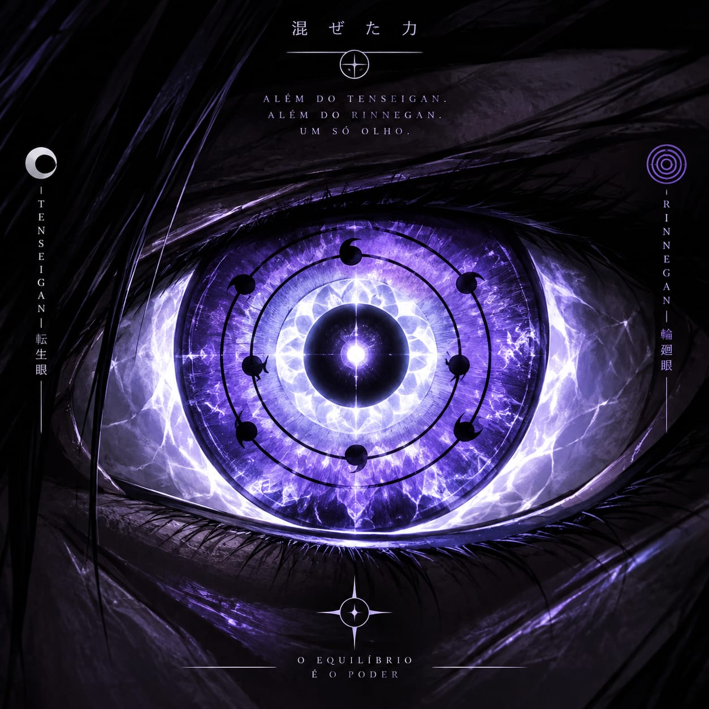

🐲
Boruto Uzumaki
23 anos · Filho de Naruto Uzumaki & Hinata Hyūga · O Herdeiro do Fogo e do Karma
Karma — Escama de Dragão EstávelTenseigan DespertoKōgan — Categoria Suprema (Olho Esquerdo)Domínio de Todos os ElementosRasengan + Raiton AvançadoTaijutsu PerfeitoFūinjutsu PerfeitoNinjutsu PerfeitoSincronia com o Modo Kurama PerfeitoRyūjin no Yoroi — Armadura em Escala de SusanooTenmy Raijin — Técnica CombinadaHerdeiro
"Meu pai carregou o Nove-Caudas sozinho até aprender a confiar em alguém. Eu não preciso carregar nada sozinho — só preciso estar pronto quando chegar minha vez."
🏷️ Tags & Evolução do Karma
Boruto faz parte da geração de ouro unificada ao lado de Sarada, Himawari e dos seis herdeiros — Kuroshin, Aiko, Akari, Kael, Mizuki e a própria Sarada — treinada desde cedo por Naruto no controle de chakra de Kurama e, na maior parte técnica, por Guilherme, Eduardo e Sasuke, que assumiram pessoalmente boa parte da formação dele em ninjutsu, fūinjutsu, raiton avançado, domínio elemental e leitura de combate. Diferente da linha original, o Karma dele nunca esteve sob risco de corrupção Ōtsutsuki — evoluiu, sob supervisão direta de Naruto e Sasuke desde o início, como um amplificador limpo de chakra Uzumaki, hoje totalmente dominado por Boruto em qualquer estágio, e foi o próprio avanço do selo que despertou o Tenseigan latente na linhagem Hyūga-Ōtsutsuki dele.
Karma — Domínio Total
Boruto controla o próprio Karma por completo, do selo latente à sincronia quase perfeita com o Modo Kurama — nenhuma fase escapa do controle dele, nenhum efeito colateral, nenhuma voz estranha por trás.
Tenseigan — Despertar pelo Karma
O amadurecimento do Karma reagiu com o resquício Ōtsutsuki latente no sangue Hyūga de Hinata e despertou o Tenseigan de Boruto — não como herança direta de Toneri, mas como consequência natural do próprio selo evoluindo dentro dele.
Formação Guilherme, Eduardo & Sasuke
A maior parte da técnica de Boruto — raiton avançado, kenjutsu de apoio, fūinjutsu de alto nível, domínio elemental amplo e leitura tática de campo — veio do treino direto e constante ao lado de Guilherme, Eduardo e Sasuke, não de tentativa e erro sozinho.
Rasengan do pai, Raiton do mestre
Combina o Rasengan herdado de Naruto com o Raiton avançado ensinado por Sasuke — a fusão vira a assinatura de combate de Boruto em qualquer distância.
Todos os Elementos, Afinidade Lapidada
Boruto consegue manifestar as cinco naturezas de chakra, mas só Raiton, Fūton e Katon foram levados ao limite — exploradas a fundo, ano após ano, por Eduardo e Guilherme até virarem extensão natural do combate dele.
Status visual no site
Boruto é posicionado como herdeiro completo: Karma, Tenseigan, ninjutsu, fūinjutsu e liderança de equipe no mesmo patamar técnico dos demais herdeiros, com identidade própria de combate.
Herdeiro confirmado · linha própria
⚡ Buff — Domínio Técnico Completo
Assim como Sasuke, Akari e Sarada, Boruto não tem ponto fraco técnico em nenhuma das oito bases do clã — domínio absoluto em todas as áreas, sem exceção, mais o domínio total exclusivo do próprio Karma.
Taijutsu PerfeitoDōjutsu PerfeitoNinjutsu PerfeitoGenjutsu PerfeitoIryō Ninjutsu PerfeitoShinjutsu PerfeitoKinjutsu PerfeitoFūinjutsu Perfeito
💠 Passiva — Herança Tripla
Sangue Uzumaki, Vontade Hyūga, Técnica Uchiha
Boruto carrega três heranças ao mesmo tempo: o chakra vital inesgotável dos Uzumaki, a percepção calma e o Byakugan latente herdados de Hinata, e a técnica de combate refinada que só anos de treino direto com Guilherme e Sasuke conseguem entregar. Nenhuma das três é decorativa — ele usa as três em conjunto, quase sempre na mesma sequência de combate, com o Karma amarrando tudo.
Karma Sem Limites
Domínio total do selo permite abrir, fechar e escalar o Karma em qualquer estágio sem custo de controle — Boruto decide exatamente quanto libera, sem risco de perder o próprio corpo para a marca.
Sincronia com Kurama
O vínculo entre o Karma de Boruto e o chakra residual de Kurama chega a sincronia quase completa com o Modo Kurama Perfeito — algo que a versão original dele jamais alcançou.
Fūinjutsu de Combate
Domínio perfeito de fūinjutsu permite a Boruto selar, redirecionar ou neutralizar jutsus inimigos em pleno combate — herança direta do clã Uzumaki, lapidada por Guilherme e Sasuke.
🖼️ Asset & Função de Boruto


Escala corrigida
Boruto não compete em escala bruta com os cinco supremos nem precisa disso — mas, assim como Sasuke, Akari e Sarada, possui domínio perfeito em todas as bases técnicas mais o controle total exclusivo do Karma: golpe certo, selo certo, sem desperdício de chakra ou movimento.
📌 Papel na História
Boruto recusou boa parte da rebeldia da linha original assim que percebeu o tamanho do mundo que herdaria. Treinado por Naruto no controle de chakra de Kurama residual e, na maior parte técnica, por Guilherme e Sasuke — que lapidaram o Rasengan dele com Raiton avançado, o fūinjutsu de alto nível e a leitura tática de campo — hoje lidera uma equipe de elite formada pelos nomes mais fortes da nova geração de Konoha e da Yami no Sato. É visto pelo conselho conjunto como o futuro natural do posto de Hokage, embora ele mesmo prefira, por enquanto, o campo de missão à cadeira do escritório.
Função principalCombate versátil de médio e curto alcance, liderança de equipe e uso tático do Karma como recurso de virada.
Melhor cenárioMissões de comando, duelos prolongados onde o Karma pode escalar, defesa coordenada da geração unificada.
AssinaturaRasengan com Raiton avançado + fūinjutsu de combate + Karma sincronizado com Kurama.
ContrasteQuanto mais o combate se estende, mais perigoso ele fica — o Karma dele não é pico frágil, é escalada controlada.
Linhagem & Família
Origem
Filho biológico de Naruto Uzumaki e Hinata Hyūga. Cresceu treinando lado a lado com Sarada, Himawari e os demais herdeiros da nova geração — Kuroshin, Aiko, Akari, Kael e Mizuki. Herdeiro direto do clã Uzumaki e do posto que o pai construiu, formado tecnicamente por Guilherme e Sasuke.
Idade
23 anos.
Presença equilibrada entre a determinação teimosa de Naruto e a calma observadora de Hinata — postura de líder desde a academia, hoje já comandando equipe própria.
Presença equilibrada entre a determinação teimosa de Naruto e a calma observadora de Hinata — postura de líder desde a academia, hoje já comandando equipe própria.
Aparência Física
Cabelo
Loiro-claro, espesso e despenteado, mechas caindo soltas sobre a testa e as laterais do rosto — herdado do pai, com a mesma desordem característica de quem nunca se importou muito com espelho, agora mais longo e selvagem que na infância.
Olhos — Karma Ativo & Tenseigan
Em repouso: azul claro, herança direta de Naruto, com um olhar afiado e intenso, quase felino, de quem já viveu combate de verdade. Com o Karma ativo, marcas escuras em padrão de escama sobem discretamente pelo lado esquerdo do rosto e do olho, sem nunca tomar o controle — sinal visível de domínio, não de corrupção. Quando desperta o Tenseigan, a íris muda para prateado-lavanda com anéis concêntricos visíveis, substituindo temporariamente o azul e o Byakugan residual — ativação total sob controle dele, revertida assim que o combate ou a leitura de campo termina.
Rosto
Traços marcantes herdados de Naruto, com as marcas de bigode mais discretas que o pai. Semblante sério e vigilante, sobrancelha franzida em alerta constante, olhar direto e confiante — a expressão de quem carrega peso de liderança, mas nunca perdeu a teimosia por baixo.
Corpo
Estrutura ágil e resistente, construída para combate prolongado — resultado direto do treino de raiton avançado e kenjutsu de apoio ensinado por Sasuke e Guilherme. Mãos e dedos parcialmente enfaixados em bandagens brancas, sinal de uso constante de armas e selos em combate.
Vestimenta
Manto longo preto de gola alta, forrado por dentro em azul-escuro vibrante que aparece nas dobras e na virada das mangas — o símbolo do clã Uzumaki bordado em branco sobre o peito e o símbolo do clã Hyūga discretamente costurado na gola, herança dupla de Naruto e Hinata. Por baixo, roupa justa preta, cinto marrom cruzando a cintura preso por uma fivela de metal. Uma espada enfaixada em bandagens brancas é carregada presa às costas, cabo à mostra sobre o ombro. Calça preta larga, sandálias ninja tradicionais e uma pulseira preta no pulso completam o visual — a postura é baixa, agachada, pronta para agir a qualquer instante.
Personalidade
⚔️ Modo Combate
Direto. Adaptável. Nunca desiste.
Em combate, Boruto lê a situação rápido e adapta o plano no meio da luta sem perder ritmo — o mesmo instinto teimoso do pai, com a precisão técnica que só o treino direto com Guilherme e Sasuke poderia entregar. Escala o Karma sem hesitar quando o combate exige.
🐲 Karma — Escama de Dragão Estável
Karma — O Selo Que Ele Domina por Completo
因果 · Karma evoluído como amplificador limpo de chakra Uzumaki
O Karma de Boruto se desenvolveu sob supervisão direta de Naruto e Sasuke desde o início, sem a corrupção de Ōtsutsuki hostis por trás. Evoluiu como marca estável de escama de dragão — herança direta da natureza draconiana que corre no chakra do pai — e hoje já opera em sincronia quase completa com o Modo Kurama Perfeito, algo que a versão original dele jamais alcançou. Boruto domina totalmente o selo: escala, sustenta e desativa cada estágio por vontade própria, sem efeito colateral e sem qualquer risco de perder o controle do próprio corpo.
O que diferencia o Karma dele de qualquer outro é a origem dupla: nasceu como amplificador de chakra Uzumaki, mas o resquício Ōtsutsuki que qualquer Karma carrega encontrou, no corpo de Boruto, um segundo ponto de ressonância — a linhagem Hyūga de Hinata. Foi essa combinação, madura e estável, que despertou o Tenseigan latente nele. Ou seja: o Karma não é só arma ofensiva, é também a chave que abriu a percepção dele para além do Byakugan residual que já carregava por herança.
O que diferencia o Karma dele de qualquer outro é a origem dupla: nasceu como amplificador de chakra Uzumaki, mas o resquício Ōtsutsuki que qualquer Karma carrega encontrou, no corpo de Boruto, um segundo ponto de ressonância — a linhagem Hyūga de Hinata. Foi essa combinação, madura e estável, que despertou o Tenseigan latente nele. Ou seja: o Karma não é só arma ofensiva, é também a chave que abriu a percepção dele para além do Byakugan residual que já carregava por herança.
· Escalada de estágio sob controle total, sem corrupção
· Sincronia quase completa com o Modo Kurama Perfeito
· Amplificação limpa de chakra Uzumaki em qualquer fase
· Gatilho que despertou o Tenseigan por ressonância com a linhagem Hyūga
· Base para o Rasengan com Raiton avançado e para o fūinjutsu de combate
· Sincronia quase completa com o Modo Kurama Perfeito
· Amplificação limpa de chakra Uzumaki em qualquer fase
· Gatilho que despertou o Tenseigan por ressonância com a linhagem Hyūga
· Base para o Rasengan com Raiton avançado e para o fūinjutsu de combate
◎ Tenseigan — O Olho Que o Karma Despertou
Tenseigan — Percepção Além do Byakugan
天生眼 · Desperto pela ressonância entre o Karma e a linhagem Hyūga-Ōtsutsuki
O Tenseigan de Boruto não veio de um transplante nem de nenhum ritual externo — despertou de dentro, quando o Karma já maduro reagiu com o traço Ōtsutsuki latente que corre, discreto, na linhagem Hyūga de Hinata. Na ativação, a íris muda para um tom prateado-lavanda com o padrão de anéis concêntricos característico, substituindo temporariamente a percepção do Byakugan residual por uma visão consideravelmente mais ampla: alcance de campo maior, leitura de chakra mais precisa a longa distância e sensibilidade a fluxos de chakra Ōtsutsuki ou dimensional que nenhum outro dōjutsu da equipe capta com a mesma clareza.
Assim como o Karma, o Tenseigan de Boruto está sob domínio total — não consome o corpo, não força evolução involuntária e não compete pelo controle da mente dele. Guilherme e Sasuke ajudaram a lapidar o uso tático do olho assim que ele despertou, mas a origem do próprio Tenseigan é só dele: consequência direta de ser, ao mesmo tempo, Uzumaki, Hyūga e portador de um Karma que amadureceu limpo.
Assim como o Karma, o Tenseigan de Boruto está sob domínio total — não consome o corpo, não força evolução involuntária e não compete pelo controle da mente dele. Guilherme e Sasuke ajudaram a lapidar o uso tático do olho assim que ele despertou, mas a origem do próprio Tenseigan é só dele: consequência direta de ser, ao mesmo tempo, Uzumaki, Hyūga e portador de um Karma que amadureceu limpo.
· Percepção de campo muito além do Byakugan residual
· Leitura precisa de chakra Ōtsutsuki e dimensional a longa distância
· Ativação e desativação por vontade própria, sem custo residual
· Combina com o Karma para antecipar ataques antes mesmo do gatilho visual normal
· Sem risco de corrupção — herança limpa, resultado da própria evolução do selo
· Leitura precisa de chakra Ōtsutsuki e dimensional a longa distância
· Ativação e desativação por vontade própria, sem custo residual
· Combina com o Karma para antecipar ataques antes mesmo do gatilho visual normal
· Sem risco de corrupção — herança limpa, resultado da própria evolução do selo
🐲 Tenmy Raijin — Selo da Gravidade Colapsante
Tenmy Raijin — Técnica combinada · Tenseigan + Rasengan + Fūinjutsu
天御雷陣 · O selo que prende a gravidade antes do golpe se completar
Boruto grava um selo de fūinjutsu no ar, no exato ponto onde vai formar o Rasengan, usando o Tenseigan para prender gravidade localizada dentro do próprio selo antes mesmo da esfera de chakra se completar. É o uso ofensivo que une, numa única técnica, as três heranças que já definem o combate dele: o Karma que despertou o Tenseigan, o Rasengan com Raiton avançado herdado do pai e do mestre, e o fūinjutsu de alto nível que ele já domina por completo.
Passo 1 — Âncora Gravitacional: o Tenseigan projeta um campo de gravidade comprimida sobre uma área de poucos metros, puxando levemente tudo ao redor para o centro — inclusive golpes e projéteis inimigos em rota de colisão.
Passo 2 — Implosão Selada: o Rasengan com Raiton avançado é formado dentro desse campo. Ao ser liberado, a esfera não apenas atinge o alvo — ela colapsa o próprio espaço comprimido pelo Tenseigan sobre o ponto de impacto, multiplicando o dano de um golpe de curto alcance em uma explosão implosiva de médio raio.
Passo 3 — Selo Residual: o fūinjutsu gravado no ar antes do golpe permanece ativo por alguns segundos após o impacto, suprimindo parcialmente o fluxo de chakra de quem estiver preso na área — a mesma lógica da Marca do Selo da Ryūmon, agora aplicada em escala de campo em vez de lâmina.
Passo 1 — Âncora Gravitacional: o Tenseigan projeta um campo de gravidade comprimida sobre uma área de poucos metros, puxando levemente tudo ao redor para o centro — inclusive golpes e projéteis inimigos em rota de colisão.
Passo 2 — Implosão Selada: o Rasengan com Raiton avançado é formado dentro desse campo. Ao ser liberado, a esfera não apenas atinge o alvo — ela colapsa o próprio espaço comprimido pelo Tenseigan sobre o ponto de impacto, multiplicando o dano de um golpe de curto alcance em uma explosão implosiva de médio raio.
Passo 3 — Selo Residual: o fūinjutsu gravado no ar antes do golpe permanece ativo por alguns segundos após o impacto, suprimindo parcialmente o fluxo de chakra de quem estiver preso na área — a mesma lógica da Marca do Selo da Ryūmon, agora aplicada em escala de campo em vez de lâmina.
· Campo de gravidade comprimida formado pelo Tenseigan antes do golpe
· Rasengan com Raiton avançado liberado dentro do próprio campo
· Colapso implosivo que multiplica o dano de curto alcance em área de médio raio
· Selo residual que suprime parcialmente o chakra de quem fica preso no campo
· Une Karma, Tenseigan, Rasengan+Raiton e Fūinjutsu Perfeito numa única técnica
· Rasengan com Raiton avançado liberado dentro do próprio campo
· Colapso implosivo que multiplica o dano de curto alcance em área de médio raio
· Selo residual que suprime parcialmente o chakra de quem fica preso no campo
· Une Karma, Tenseigan, Rasengan+Raiton e Fūinjutsu Perfeito numa única técnica
👑 Categoria Suprema — Kōgan (Olho Esquerdo)

皇眼 · Kōgan — Domínio Total, Sem Custo
Ativação exclusiva do olho esquerdo · domínio eterno, sem gasto de chakra
Assim como o Tenseigan despertou limpo, sem corrupção, o domínio de Boruto sobre o Kōgan também é total: ele ativa e desativa o olho esquerdo à vontade, sem ritual e sem hesitação. O olho direito continua com o Tenseigan de sempre; só o esquerdo alterna para o Kōgan quando ele decide. Por ser um domínio eterno, e não um empréstimo de poder, não existe custo de chakra para mantê-lo ativo, nem risco de fadiga ou cegueira — a mesma limpeza de herança que já define o Karma e o Tenseigan dele.
· Ativação e desativação instantâneas, por vontade própria, sem gatilho externo
· Exclusivo ao olho esquerdo — o direito mantém sempre o Tenseigan
· Custo de chakra zero enquanto ativo — domínio eterno, não empréstimo temporário
· Combina com o Tenmy Raijin sem competir por chakra ou foco
· Exclusivo ao olho esquerdo — o direito mantém sempre o Tenseigan
· Custo de chakra zero enquanto ativo — domínio eterno, não empréstimo temporário
· Combina com o Tenmy Raijin sem competir por chakra ou foco
Atributos de Combate
Afinidades Elementais
Boruto tem controle funcional sobre as cinco naturezas de chakra — nenhum elemento é ponto cego para ele. Mas domínio total não é sinônimo de afinidade máxima: Raiton, Fūton e Katon foram os que Eduardo e Guilherme exploraram a fundo com ele, ano após ano, até levar cada um ao limite técnico. Doton e Suiton, ele usa bem, mas nunca receberam o mesmo tempo de lapidação.
Raiton — Levado ao Limite
A afinidade mais lapidada de todas, ensinada diretamente por Sasuke e refinada por Eduardo e Guilherme até o teto técnico — corre pela Ryūmon e reveste o Rasengan, dando ao golpe corte e choque no mesmo impacto.
Fūton — Levado ao Limite
Afinidade elemental de nascença, herdada indiretamente da linhagem Uzumaki-Hyūga, explorada a fundo por Guilherme e Eduardo até virar reflexo automático. Dá giro e estabilidade extra ao Rasengan.
Katon — Levado ao Limite
Absorvido do convívio constante com Sasuke e depois puxado ao limite por Eduardo e Guilherme em treino direto — deixou de ser base herdada pontual para virar ferramenta ofensiva plena.
Doton — Domínio Funcional
Controla Doton com solidez suficiente para defesa, terreno e suporte tático, mas sem o mesmo grau de exploração que Raiton, Fūton e Katon receberam.
Suiton — Domínio Funcional
Manuseia Suiton com competência sólida, útil em cenários específicos, porém é o elemento menos trabalhado da rotação — nunca foi prioridade de treino.
Karma — Amplificador Universal
Não é um elemento tradicional, mas funciona como multiplicador limpo de chakra Uzumaki sobre qualquer técnica que Boruto já domine, elemental ou não.
Karma amplifica → Rasengan gira com Fūton → Raiton avançado reveste a lâmina ou o golpe final · Doton e Suiton entram como suporte tático quando o combate pede
Arsenal
龍紋 · Ryūmon — A Lâmina do Selo Dracônico
Kunai-Lâmina Híbrida · Forjada por Guilherme Uchiha & Sasuke Uchiha · Customização Individual
A Ryūmon não é uma arma comprada nem herdada de um arsenal comum — foi forjada especificamente para Boruto, num processo conduzido a quatro mãos por Guilherme Uchiha e por Sasuke Uchiha. Guilherme trouxe a técnica de forja em gelo e relâmpago que já deu forma às lâminas de precisão do próprio Snow Fox Primordial; Sasuke trouxe a medida exata — peso, equilíbrio e resposta ao Raiton calibrados golpe a golpe junto do aluno até a arma responder como extensão natural do braço dele, não como cópia de nenhuma lâmina anterior. O resultado é uma kunai-lâmina híbrida, mais longa que uma kunai comum e mais rápida que qualquer espada de mesma classe, construída para o estilo de Boruto: Rasengan nas mãos, Raiton na lâmina, fūinjutsu gravado no cabo.
A lâmina é prateada com veias douradas em padrão de escama, forjada na mesma têmpera de gelo-relâmpago de Guilherme, mas gravada num ritual conduzido por Sasuke que selou o próprio chakra Uchiha na estrutura do aço — a guarda tem o formato do redemoinho Uzumaki, e o cabo carrega, discreto, selos de fūinjutsu ativáveis por toque.
Condutora de Raiton — Passiva. A Ryūmon conduz o Raiton avançado de Boruto sem dissipar a técnica na lâmina — o corte sai carregado de relâmpago concentrado do início ao fim do golpe, sem precisar reformar o jutsu a cada ataque.
Selo no Cabo — Passiva. Os selos de fūinjutsu gravados no cabo permitem a Boruto ativar barreiras, redirecionamentos ou neutralizações de jutsu com um único toque, sem precisar de sequência de mãos completa.
Ryūmon Kaijin — Ativa. Um único corte carregado de Raiton concentrado ao máximo no fio da lâmina, potencializado por um pulso do Karma — velocidade e precisão acima do normal, pensado para encerrar o combate num só movimento quando a abertura certa aparece.
Marca da Forja — Passiva. Por ter sido gravada com o próprio chakra Uchiha de Sasuke e temperada por Guilherme, a Ryūmon nunca falha em reconhecer a mão de Boruto — nenhuma outra pessoa consegue canalizar chakra através dela com a mesma eficiência.
A lâmina é prateada com veias douradas em padrão de escama, forjada na mesma têmpera de gelo-relâmpago de Guilherme, mas gravada num ritual conduzido por Sasuke que selou o próprio chakra Uchiha na estrutura do aço — a guarda tem o formato do redemoinho Uzumaki, e o cabo carrega, discreto, selos de fūinjutsu ativáveis por toque.
Condutora de Raiton — Passiva. A Ryūmon conduz o Raiton avançado de Boruto sem dissipar a técnica na lâmina — o corte sai carregado de relâmpago concentrado do início ao fim do golpe, sem precisar reformar o jutsu a cada ataque.
Selo no Cabo — Passiva. Os selos de fūinjutsu gravados no cabo permitem a Boruto ativar barreiras, redirecionamentos ou neutralizações de jutsu com um único toque, sem precisar de sequência de mãos completa.
Ryūmon Kaijin — Ativa. Um único corte carregado de Raiton concentrado ao máximo no fio da lâmina, potencializado por um pulso do Karma — velocidade e precisão acima do normal, pensado para encerrar o combate num só movimento quando a abertura certa aparece.
Marca da Forja — Passiva. Por ter sido gravada com o próprio chakra Uchiha de Sasuke e temperada por Guilherme, a Ryūmon nunca falha em reconhecer a mão de Boruto — nenhuma outra pessoa consegue canalizar chakra através dela com a mesma eficiência.
Ascensão — Estágios do Karma
Três Estágios, Uma Só Escolha
因果進化 · Progressão sob domínio total, sem risco de corrupção
O Karma de Boruto evolui em três estágios visíveis, e a transição entre eles é sempre decisão dele, nunca reação de pânico ou perda de controle — diferença central em relação à linha original. Cada estágio amplia o alcance e o gasto de chakra permitido, mas nenhum deles compromete a mente ou o corpo.
· Estágio 1 — Selo Latente: marca discreta e inativa, chakra Uzumaki em fluxo normal, nenhuma alteração visível.
· Estágio 2 — Escama Ativa: marcas escuras sobem pelo lado esquerdo do rosto, amplificação moderada de velocidade e força, Rasengan com Raiton ganha alcance extra.
· Estágio 3 — Sincronia com Kurama: quase sincronia completa com o Modo Kurama Perfeito residual, pico de chakra Uzumaki liberado, usado só quando o combate realmente exige o máximo.
· Estágio 4 — Ryūjin no Yoroi: a manifestação em escala colossal do próprio Karma, reservada para quando nem o pico do Estágio 3 basta.
· Estágio 2 — Escama Ativa: marcas escuras sobem pelo lado esquerdo do rosto, amplificação moderada de velocidade e força, Rasengan com Raiton ganha alcance extra.
· Estágio 3 — Sincronia com Kurama: quase sincronia completa com o Modo Kurama Perfeito residual, pico de chakra Uzumaki liberado, usado só quando o combate realmente exige o máximo.
· Estágio 4 — Ryūjin no Yoroi: a manifestação em escala colossal do próprio Karma, reservada para quando nem o pico do Estágio 3 basta.
🐲 Manto do Karma — Ryūjin no Yoroi
🐲 Ryūjin no Yoroi — A Armadura do Rei Dragão
龍神の鎧 · Estágio 4 do Karma · Manifestação em Escala de Susanoo
O Karma de Boruto não para no Estágio 3. Sob pressão extrema, o selo se abre por completo e o chakra Uzumaki amplificado se molda em volta dele numa armadura colossal de escamas douradas e prateadas, com a cabeça de um dragão erguida atrás dos ombros e um segundo par de braços espectrais que dobram o alcance dos golpes — o mesmo princípio de escala que dá aos Susanoo Perfeitos dos herdeiros a capacidade de rivalizar diretamente com uma Bijū em porte e força bruta. Não é um Susanoo, não vem de nenhum dōjutsu — é o próprio Karma levado ao limite absoluto, sob domínio total, sem nenhum risco de corrupção Ōtsutsuki mesmo nessa escala. A Ryūmon cresce junto com a armadura, virando uma lâmina do tamanho de uma espada de Susanoo nas mãos espectrais do manto, carregada do Raiton mais denso que Boruto já produziu.
Armadura de Escama Dracônica
Placas douradas e prateadas cobrem o corpo inteiro, com a cabeça de um dragão erguida atrás dos ombros — silhueta colossal em pé de igualdade com um Susanoo Perfeito.
Braços Espectrais
Um segundo par de braços de chakra sólido dobra o alcance e a força dos golpes de Boruto, empunhando a Ryūmon em escala colossal.
Núcleo Sem Corrupção
Mesmo no estágio máximo, o Karma continua sob domínio total de Boruto — nenhuma voz estranha, nenhum efeito colateral, decisão sempre dele de quando abrir e quando fechar.
Pulso de Kurama
A sincronia com o Modo Kurama Perfeito residual reforça o manto por dentro, dando à armadura resistência e regeneração equivalentes às de uma Bijū em miniatura.
🐲 Ryūjin Zange — Investida Final do Dragão (Técnica Suprema)
A única técnica que Boruto reserva para quando decidir que o combate termina agora
Com a Ryūjin no Yoroi completa, Boruto concentra todo o Raiton avançado disponível na lâmina espectral da Ryūmon em escala colossal e desfere um único golpe reto, guiado pelo Kōgan e pelo Tenseigan simultaneamente — o Tenseigan lê o ponto exato de menor resistência do alvo, o Kōgan corrige a trajetória do braço espectral em tempo real, e o Karma libera, só naquele instante, toda a energia normalmente reservada como margem de segurança. O golpe carrega o peso combinado do Rasengan, do Raiton e da própria armadura dracônica — Boruto só usa uma vez por combate, porque o corpo dele precisa de horas para se recuperar do gasto total do selo.
· Concentra Rasengan + Raiton avançado + braço espectral da Ryūjin no Yoroi num só golpe
· Tenseigan e Kōgan corrigem a trajetória em tempo real, tornando o golpe quase impossível de desviar
· Libera toda a margem de segurança normalmente reservada pelo Karma
· Uso único por combate — o corpo de Boruto precisa de horas para se recuperar do gasto total
· Tenseigan e Kōgan corrigem a trajetória em tempo real, tornando o golpe quase impossível de desviar
· Libera toda a margem de segurança normalmente reservada pelo Karma
· Uso único por combate — o corpo de Boruto precisa de horas para se recuperar do gasto total
Passivas de Combate
⚔️ Passiva — Ataque
Leitura Antes do Corte — A percepção tática de Boruto, lapidada por Sasuke, lê a abertura do oponente antes do golpe da Ryūmon ser desferido, tornando o corte quase impossível de antecipar.
Fluxo Sem Pausa — Boruto alterna Rasengan, taijutsu e golpes de lâmina no mesmo combo, sem intervalo perceptível entre os estilos.
Rasengan Refinado — Versão herdada e lapidada do Rasengan de Naruto, combinada com Raiton avançado ensinado por Sasuke — gasto de chakra reduzido e maior controle de direção do impacto.
Fluxo Sem Pausa — Boruto alterna Rasengan, taijutsu e golpes de lâmina no mesmo combo, sem intervalo perceptível entre os estilos.
Rasengan Refinado — Versão herdada e lapidada do Rasengan de Naruto, combinada com Raiton avançado ensinado por Sasuke — gasto de chakra reduzido e maior controle de direção do impacto.
🛡️ Passiva — Defesa
Postura Inabalável — Mesmo sob pressão extrema, Boruto mantém a base de combate herdada do treino direto com Guilherme e Sasuke — raramente perde o equilíbrio ou a leitura da situação.
Fūinjutsu de Reação — Domínio perfeito de fūinjutsu permite a Boruto selar jutsus inimigos em pleno combate, sem sair do ritmo da luta.
Fūinjutsu de Reação — Domínio perfeito de fūinjutsu permite a Boruto selar jutsus inimigos em pleno combate, sem sair do ritmo da luta.
🔁 Passiva — Contra-ataque
Escalada Controlada do Karma — Sob pressão extrema, Boruto escala o próprio Karma sem perder o controle do corpo nem da mente — cada estágio é escolha, nunca reação desesperada.
Resposta no Mesmo Fôlego — Um desvio bem-sucedido de Boruto quase sempre já vem com o contra-golpe embutido, sem precisar reposicionar o corpo antes de revidar.
Resposta no Mesmo Fôlego — Um desvio bem-sucedido de Boruto quase sempre já vem com o contra-golpe embutido, sem precisar reposicionar o corpo antes de revidar.
🧠 Passiva — Tático
Leitura de Padrão — Boruto identifica rapidamente o padrão de ataque de um oponente repetido, ajustando a resposta antes do terceiro golpe da sequência.
Ajuste em Tempo Real — Muda o plano de combate no meio da luta sem perder o ritmo, herança direta da leitura de campo ensinada por Sasuke e Guilherme.
Ajuste em Tempo Real — Muda o plano de combate no meio da luta sem perder o ritmo, herança direta da leitura de campo ensinada por Sasuke e Guilherme.
📡 Passiva — Operacional & Liderança
Comando Silencioso — Coordena a própria equipe com sinais mínimos e leitura de intenção, sem precisar gritar ordens em pleno combate.
Sincronia de Esquadrão — Ajusta automaticamente a própria posição em campo para cobrir brechas deixadas por aliados, — hábito natural de quem já lidera equipe própria.
Sincronia de Esquadrão — Ajusta automaticamente a própria posição em campo para cobrir brechas deixadas por aliados, — hábito natural de quem já lidera equipe própria.
👁️ Passiva — Percepção & Sensorial
Resquício do Byakugan — Herança latente de Hinata dá a Boruto uma percepção periférica levemente acima do normal, útil para notar movimentação nas bordas do campo de visão.
Antecipação de Movimento — Combinada ao Karma, essa percepção residual ajuda Boruto a antecipar frações de segundo antes de um ataque direto.
Antecipação de Movimento — Combinada ao Karma, essa percepção residual ajuda Boruto a antecipar frações de segundo antes de um ataque direto.
💫 Passiva — Recuperação & Suporte
Reserva Uzumaki — Chakra vital herdado do clã Uzumaki garante reservas maiores que a média e recuperação de fôlego mais rápida entre picos de esforço.
Regeneração Acelerada — Cortes e ferimentos leves fecham num ritmo visivelmente mais rápido que o de um shinobi comum, mesmo sem o Karma ativo.
Regeneração Acelerada — Cortes e ferimentos leves fecham num ritmo visivelmente mais rápido que o de um shinobi comum, mesmo sem o Karma ativo.
🧬 Passiva — Adaptação
Ajuste de Combate — o Karma — Após sofrer um tipo específico de ataque, Boruto ajusta o Karma para reduzir o efeito de golpes semelhantes na próxima vez.
Leitura Adaptativa — o Tenseigan — Boruto aprende com cada troca de golpes: o Tenseigan se reconfigura sutilmente contra o padrão de ataque mais recente do oponente.
Reconfiguração Tática — o Rasengan Refinado — Diante de uma ameaça nova, o Rasengan Refinado se adapta em tempo real, tornando o mesmo golpe cada vez menos eficaz contra Boruto.
Leitura Adaptativa — o Tenseigan — Boruto aprende com cada troca de golpes: o Tenseigan se reconfigura sutilmente contra o padrão de ataque mais recente do oponente.
Reconfiguração Tática — o Rasengan Refinado — Diante de uma ameaça nova, o Rasengan Refinado se adapta em tempo real, tornando o mesmo golpe cada vez menos eficaz contra Boruto.
🛡️ Passiva — Resiliência
Corpo que Resiste — o Karma — Cada dano físico absorvido por Boruto fortalece o Karma, tornando-o progressivamente mais difícil de derrubar ou desgastar.
Sob Pressão — o Tenseigan — Quanto mais Boruto suporta em combate, mais resistente fica o Tenseigan a cortes, impactos e fadiga acumulada.
Fortaleza Crescente — o Rasengan Refinado — Ferimentos que normalmente enfraqueceriam um lutador comum apenas endurecem o Rasengan Refinado em Boruto, sem comprometer sua performance.
Resistência Acumulada — a Ryūmon — Boruto converte dano sofrido em resistência bruta: a Ryūmon absorve o impacto e devolve estabilidade em vez de fraqueza.
Sob Pressão — o Tenseigan — Quanto mais Boruto suporta em combate, mais resistente fica o Tenseigan a cortes, impactos e fadiga acumulada.
Fortaleza Crescente — o Rasengan Refinado — Ferimentos que normalmente enfraqueceriam um lutador comum apenas endurecem o Rasengan Refinado em Boruto, sem comprometer sua performance.
Resistência Acumulada — a Ryūmon — Boruto converte dano sofrido em resistência bruta: a Ryūmon absorve o impacto e devolve estabilidade em vez de fraqueza.
🌱 Passiva — Evolução
Aprendizado no Combate — o Karma — Cada vez que Boruto é forçado a apanhar em combate, o Karma se aprofunda, revelando uma camada adicional de capacidade sobre o oponente.
Evolução pela Dor — o Tenseigan — O sofrimento em combate não enfraquece Boruto — o Tenseigan evolui a cada golpe recebido, tornando o próximo confronto contra o mesmo tipo de ataque mais fácil.
Evolução pela Dor — o Tenseigan — O sofrimento em combate não enfraquece Boruto — o Tenseigan evolui a cada golpe recebido, tornando o próximo confronto contra o mesmo tipo de ataque mais fácil.
📈 Passiva — Escalonamento
Poder Crescente — o Karma — Quanto mais o combate se estende, mais forte fica o Karma em Boruto, crescendo progressivamente enquanto a luta continuar.
Intensidade Progressiva — o Tenseigan — A cada minuto adicional de combate, Boruto sente o Tenseigan se intensificar, sem precisar de um gatilho externo para isso.
Escalada Silenciosa — o Rasengan Refinado — O poder de o Rasengan Refinado em Boruto aumenta em camadas conforme certas condições de combate se repetem, sem teto definido dentro da luta.
Intensidade Progressiva — o Tenseigan — A cada minuto adicional de combate, Boruto sente o Tenseigan se intensificar, sem precisar de um gatilho externo para isso.
Escalada Silenciosa — o Rasengan Refinado — O poder de o Rasengan Refinado em Boruto aumenta em camadas conforme certas condições de combate se repetem, sem teto definido dentro da luta.
🔁 Passiva — Retaliação
Preço do Contato — o Karma — Todo golpe físico que acerta Boruto é parcialmente devolvido ao agressor através de o Karma, no instante seguinte ao contato.
Retorno Imediato — o Tenseigan — Quando Boruto sofre dano direto, o Tenseigan libera uma resposta automática contra quem o atingiu, sem exigir comando consciente.
Dano Refletido — o Rasengan Refinado — Atacar Boruto de perto tem um custo: o Rasengan Refinado retribui parte do impacto recebido de volta para o oponente.
Retorno Imediato — o Tenseigan — Quando Boruto sofre dano direto, o Tenseigan libera uma resposta automática contra quem o atingiu, sem exigir comando consciente.
Dano Refletido — o Rasengan Refinado — Atacar Boruto de perto tem um custo: o Rasengan Refinado retribui parte do impacto recebido de volta para o oponente.
🩸 Passiva — Herança do Clã
Sangue Desperto — o Karma — Sob pressão real, a herança de Boruto desperta através de o Karma, estabilizando seu chakra e ampliando o controle em combate.
Legado em Alerta — o Tenseigan — O legado ancestral por trás de o Tenseigan se intensifica quando Boruto enfrenta uma ameaça genuína, sem exigir ativação consciente.
Herança Manifesta — o Rasengan Refinado — Boruto carrega uma herança que se manifesta automaticamente em momentos críticos: o Rasengan Refinado responde ao sangue antes da decisão consciente.
Instinto Ancestral — a Ryūmon — Quanto mais decisiva a batalha, mais o legado do clã em Boruto se expressa através de a Ryūmon, refinando sua técnica sob pressão.
Legado em Alerta — o Tenseigan — O legado ancestral por trás de o Tenseigan se intensifica quando Boruto enfrenta uma ameaça genuína, sem exigir ativação consciente.
Herança Manifesta — o Rasengan Refinado — Boruto carrega uma herança que se manifesta automaticamente em momentos críticos: o Rasengan Refinado responde ao sangue antes da decisão consciente.
Instinto Ancestral — a Ryūmon — Quanto mais decisiva a batalha, mais o legado do clã em Boruto se expressa através de a Ryūmon, refinando sua técnica sob pressão.
🌬️ Passiva — Vigor Shinobi
Fôlego Renovado — o Karma — Boruto recupera fôlego e resistência física em rajadas curtas durante trocas rápidas de golpes, sustentando o Karma por muito mais tempo que o esperado.
Segundo Vento — o Tenseigan — O chakra de Boruto se regenera em ritmo acima do normal entre um ataque e outro, mantendo o Tenseigan ativo mesmo em combates longos.
Segundo Vento — o Tenseigan — O chakra de Boruto se regenera em ritmo acima do normal entre um ataque e outro, mantendo o Tenseigan ativo mesmo em combates longos.
🌅 Passiva — Ascensão Shinobi
Limite Rompido — o Karma — Em batalhas decisivas contra ameaças de alto nível, o potencial de Boruto através de o Karma se eleva progressivamente, aproximando-o do próprio teto.
Potencial em Expansão — o Tenseigan — Quanto mais tempo Boruto permanece em combate real, mais o Tenseigan se expande, elevando gradualmente sua capacidade de luta.
Ascensão sob Pressão — o Rasengan Refinado — Sob pressão extrema, Boruto desperta uma camada adicional de força latente em o Rasengan Refinado, normalmente mantida em repouso.
Teto Quebrado — a Ryūmon — O chakra combinado por trás de a Ryūmon rompe o limite habitual de Boruto em confrontos decisivos, elevando-o a um patamar acima do normal.
Potencial em Expansão — o Tenseigan — Quanto mais tempo Boruto permanece em combate real, mais o Tenseigan se expande, elevando gradualmente sua capacidade de luta.
Ascensão sob Pressão — o Rasengan Refinado — Sob pressão extrema, Boruto desperta uma camada adicional de força latente em o Rasengan Refinado, normalmente mantida em repouso.
Teto Quebrado — a Ryūmon — O chakra combinado por trás de a Ryūmon rompe o limite habitual de Boruto em confrontos decisivos, elevando-o a um patamar acima do normal.
🔒 Passiva — Potencial oculto
Reserva Selada — o Karma — Boruto mantém deliberadamente parte de o Karma represada; sob ameaça real, essa reserva é liberada de uma vez, surpreendendo quem o via como previsível.
Força Não Revelada — o Tenseigan — Existe em Boruto um nível de força ligado a o Tenseigan que raramente é mostrado — e que só emerge quando a situação exige o máximo dele.
Camada Escondida — o Rasengan Refinado — Boruto guarda uma capacidade latente em o Rasengan Refinado que a maioria dos oponentes nunca chega a ver antes do combate terminar.
Força Não Revelada — o Tenseigan — Existe em Boruto um nível de força ligado a o Tenseigan que raramente é mostrado — e que só emerge quando a situação exige o máximo dele.
Camada Escondida — o Rasengan Refinado — Boruto guarda uma capacidade latente em o Rasengan Refinado que a maioria dos oponentes nunca chega a ver antes do combate terminar.
💢 Passiva — Fúria
Fúria Represada — o Karma — Boruto deixa o Karma reagir com mais violência a cada provocação sofrida em combate; a raiva acumulada intensifica o próximo golpe.
Explosão Contida — o Tenseigan — Quando Boruto é ferido repetidamente sem revidar, o Tenseigan armazena essa raiva contida e a libera de uma vez no contra-ataque seguinte.
Ira Crescente — o Rasengan Refinado — A compostura de Boruto racha sob fúria crescente: o Rasengan Refinado passa a agir de forma mais bruta e menos calculada quanto mais a luta se prolonga.
Fervor de Combate — a Ryūmon — Cada golpe humilhante recebido por Boruto desperta a Ryūmon com mais intensidade, elevando a agressividade dos ataques seguintes.
Ponto de Ruptura — o Manto do Karma — Boruto converte irritação acumulada em impulso ofensivo: o Manto do Karma amplifica o próximo golpe físico proporcionalmente à raiva contida.
Explosão Contida — o Tenseigan — Quando Boruto é ferido repetidamente sem revidar, o Tenseigan armazena essa raiva contida e a libera de uma vez no contra-ataque seguinte.
Ira Crescente — o Rasengan Refinado — A compostura de Boruto racha sob fúria crescente: o Rasengan Refinado passa a agir de forma mais bruta e menos calculada quanto mais a luta se prolonga.
Fervor de Combate — a Ryūmon — Cada golpe humilhante recebido por Boruto desperta a Ryūmon com mais intensidade, elevando a agressividade dos ataques seguintes.
Ponto de Ruptura — o Manto do Karma — Boruto converte irritação acumulada em impulso ofensivo: o Manto do Karma amplifica o próximo golpe físico proporcionalmente à raiva contida.
⚡ Passiva — Reação
Reflexo Imediato — o Karma — Boruto percebe o início de um ataque perigoso um instante antes do impacto, permitindo reposicionar o Karma a tempo de reduzir o dano.
Instinto de Resposta — o Tenseigan — Diante de uma ameaça repentina, o reflexo de Boruto aciona o Tenseigan automaticamente, sem exigir pensamento consciente.
Antecipação de Golpe — o Rasengan Refinado — Boruto responde a golpes-surpresa com velocidade acima do normal, como se o Rasengan Refinado avisasse o corpo antes da mente perceber o perigo.
Leitura Instantânea — a Ryūmon — Movimentos bruscos do oponente são lidos instantaneamente por Boruto, que já reposiciona a Ryūmon para a defesa ou o contra-ataque ideal.
Resposta Automática — o Manto do Karma — Boruto nunca é pego totalmente desprevenido: o Manto do Karma garante uma resposta mínima mesmo contra ataques que deveriam ser imperceptíveis.
Instinto de Resposta — o Tenseigan — Diante de uma ameaça repentina, o reflexo de Boruto aciona o Tenseigan automaticamente, sem exigir pensamento consciente.
Antecipação de Golpe — o Rasengan Refinado — Boruto responde a golpes-surpresa com velocidade acima do normal, como se o Rasengan Refinado avisasse o corpo antes da mente perceber o perigo.
Leitura Instantânea — a Ryūmon — Movimentos bruscos do oponente são lidos instantaneamente por Boruto, que já reposiciona a Ryūmon para a defesa ou o contra-ataque ideal.
Resposta Automática — o Manto do Karma — Boruto nunca é pego totalmente desprevenido: o Manto do Karma garante uma resposta mínima mesmo contra ataques que deveriam ser imperceptíveis.
Estilo de Combate
Escalada Sem Pressa
O selo que ele controla · O golpe que muda de forma · A lâmina que nunca falha na mão dele
Boruto luta como quem sabe que o tempo está do lado dele: o Karma escala aos poucos sob controle total, o Rasengan com Raiton avançado abre a guarda, e a Ryūmon encerra quando a abertura certa aparece. Não há desespero nem chakra gasto à toa — cada estágio do Karma que ele libera é decisão, não reação.
Nível de Poder
Nível Herdeiro Supremo — Ryūjin no Yoroi Confirmado — Domínio Técnico Perfeito — Futuro Hokage Natural
Filho de Naruto Uzumaki e Hinata Hyūga — formado tecnicamente por Guilherme e Sasuke, sem nunca precisar repetir a solidão que marcou a juventude do pai.
Karma sob domínio total + Tenseigan desperto pela ressonância entre o selo e a linhagem Hyūga + sincronia quase completa com o Modo Kurama Perfeito + domínio Perfeito nas oito bases técnicas do clã (o mesmo padrão de Sasuke, Akari e Sarada) + controle das cinco naturezas de chakra, com Raiton, Fūton e Katon levados ao limite por Eduardo e Guilherme + Ryūmon, lâmina forjada a quatro mãos por Guilherme e Sasuke.
Com o Karma no Estágio 4, manifesto como a armadura colossal Ryūjin no Yoroi, Boruto fecha o único degrau que faltava entre ele e o restante da geração unificada — rivaliza em escala bruta diretamente com Sarada, Himawari e os demais herdeiros, um degrau abaixo apenas dos cinco supremos, e já visto pelo conselho conjunto como o futuro natural do posto de Hokage.
Karma sob domínio total + Tenseigan desperto pela ressonância entre o selo e a linhagem Hyūga + sincronia quase completa com o Modo Kurama Perfeito + domínio Perfeito nas oito bases técnicas do clã (o mesmo padrão de Sasuke, Akari e Sarada) + controle das cinco naturezas de chakra, com Raiton, Fūton e Katon levados ao limite por Eduardo e Guilherme + Ryūmon, lâmina forjada a quatro mãos por Guilherme e Sasuke.
Com o Karma no Estágio 4, manifesto como a armadura colossal Ryūjin no Yoroi, Boruto fecha o único degrau que faltava entre ele e o restante da geração unificada — rivaliza em escala bruta diretamente com Sarada, Himawari e os demais herdeiros, um degrau abaixo apenas dos cinco supremos, e já visto pelo conselho conjunto como o futuro natural do posto de Hokage.